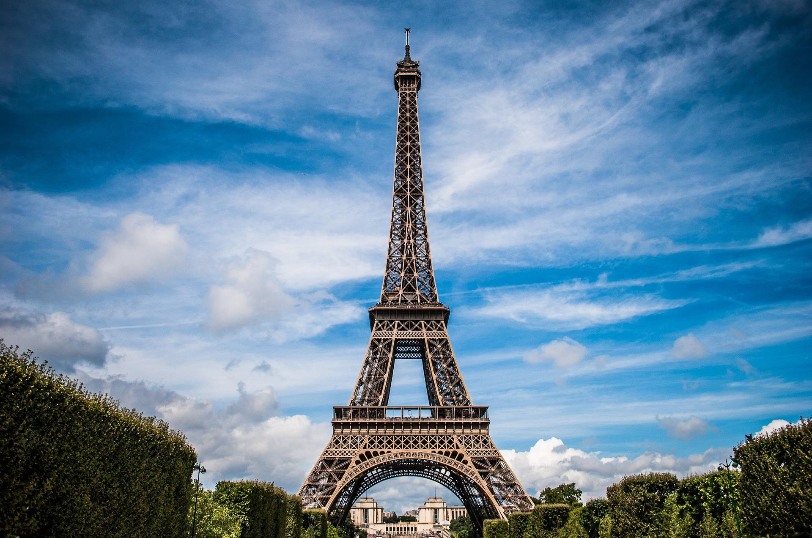

Paris
Why go to Paris?
The City of Light draws millions of visitors every year with its unforgettable ambiance. Of course, the divine cuisine and vast art collections deserve some of the credit as well. The gentle River Seine rambles through the city, flanked by stately museums, centuries-old churches, and blocks of Rococo- and Neoclassic-design architecture, further enhanced by cascading trees and glowing streetlamps. Peppering the Seine's cobbled walks and graceful bridges are impossibly chic Parisians, probably on their way to the market, cafe or cinema. Containing world-class museums, fashion, cuisine and an atmosphere all its own, Paris is also a city of "many splendors," as Ernest Hemingway recalled in his memoir, "A Moveable Feast." Visit the beloved Musée d'Orsay, shop the biggest designers on the Champs Élysées or hit the boutiques in Le Marais, take in the view atop the Eiffel Tower, or even plan a day trip to Versailles Palace. But don't miss out on the simple pleasure of meandering the marvelous arrondissements (districts), or snacking on street crepes either.
What you'll get
- Round-trip flights & airport transfers
- 5 nights in handpicked accommodations
- 5 breakfasts/li>
- 3 dinners
- Expert Tour Director
- 24/7 Support
- 2 insider tours with local guides
- Seine River Cruise
- Champagne tasting in Epernay
Itinerary
Day 1: Overnight Flight
Dream croissant dreams on your overnight flight to Paris.
Day 2: Arrive in Paris + Welcome Dinner
Welcome to Paris, also known as the City of Lights. Cue the French café music and ready your appetite—it’s going to be magnificent. In the evening, enjoy a Welcome Dinner of local cuisine and drinks with fellow travelers at an authentic local spot. Afterwards, you’re free to take the party elsewhere!
Day 3: Tour Paris + Seine River Cruise
Explore the city with a local guide by bus and by foot, an authentic introduction to Parisian life and culture. Free time suggestion The Louvre: Visit the largest art museum in the world, with an astounding collection of art from around the world—from the Palace to the glass Pyramid to the Mona Lisa.
Day 4: Enjoy a Free day in Paris + Optional excursion to Versailles
Take part in for an optional tour of Versailles or take the day to continue exploring the city. At night, enjoy an included dinner with the group.
Day 5: Travel to Edinburgh + Tour Edinburgh
All aboard! Catch your train from King's Cross Station to Edinburgh, Scotland. Built on two extinct volcanoes, Edinburgh is an enchanting labyrinth of narrow alleyways, cozy pubs, and storybook castles. You'll get an in-depth look at Scottish history and modern day life with a guided sightseeing tour of the city and castle. After your tour, the evening is free to explore on your own. Catch live music in a pub, tour the haunted vaults below the city, hike to Arthur's Seat, and take in a city that feels too magical to actually exist in real life.
Day 6: The Scottish Highlands
Spend the day exploring the Scottish Highlands*. Its beauty is everywhere, so take in the view and a deep breath—because this is Scotland’s great outdoors.
Make an appointment with us to discuss about the trip.
Call at
1-900-789-4576